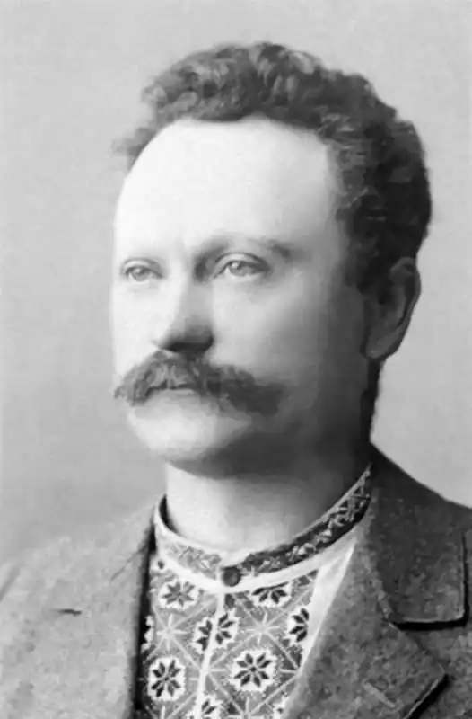
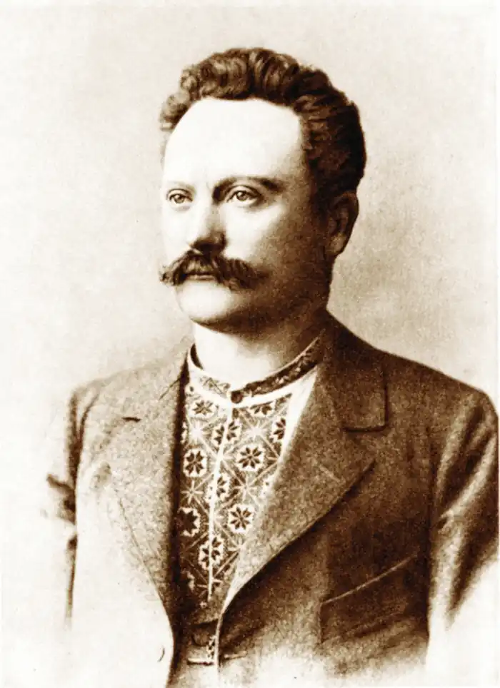
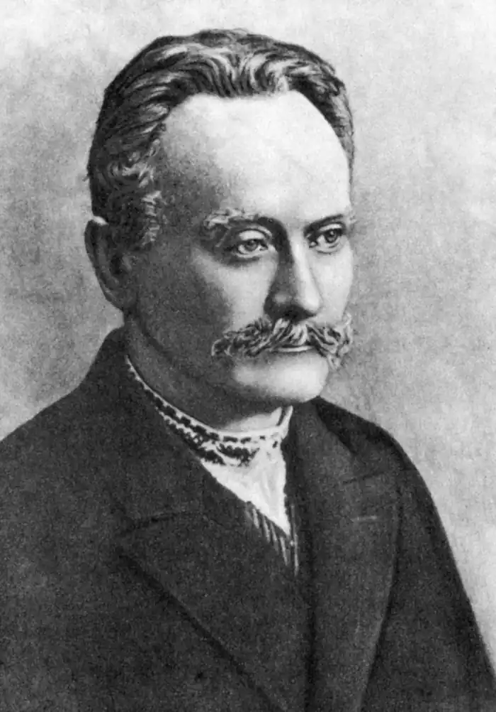
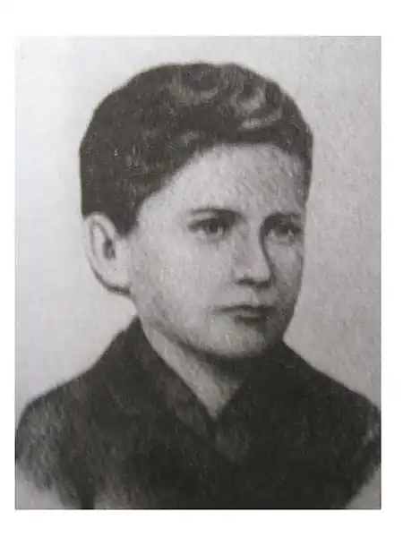
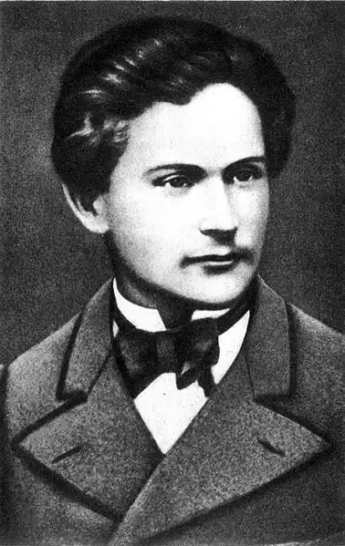
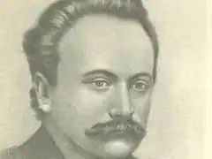

Іван Франко
(1856 — 1916)
Іван Якович Франко народився 27 серпня 1856р. у підгірському виселку Нагуєвичі Дрогобицького повіту в родині сільського коваля. Вчився він у сільській школі, спочатку в Нагуєвичах, а потім у Ясениці Сільній, у Губичах; з 1864 по 1867 рік — у Дрогобицькій школі василіян, а далі у гімназії, яку закінчив 1875р. Його батько, Яків Іванович, помер, коли І. Франкові було лише близько одинадцяти років. Саме про смерть батька у 1871р. Франко написав свій перший вірш. Вітчим добре поставився до свого пасинка і дав йому змогу продовжувати навчання. Та невдовзі у молодого гімназиста померла і мати (1872 року), яку він дуже любив і присвятив їй свої згадки у вірші "Пісня і праця" (1883р.), у поемі "Гадки на межі" (1881p.). І після смерті матері Івана Франка вітчим, одружившись вдруге, не змінив свого ставлення до пасинка і допомагав йому продовжувати навчання. 26 липня 1875 року Іван Франко закінчує Дрогобицьку гімназію і одержує атестат зрілості. Вже з дитячих років "Кобзар" Т. Шевченка став його улюбленою книгою. В гімназії Франко глибоко цікавиться і знайомиться з літературою польською, німецькою, французькою, з латинськими класиками. Влітку 1874 року І. Франко подорожує вперше самостійно по Підкарпаттю (Лолин, Тур'я, Волосенки і т. д.) і робить фольклорні записи, а восени 1875 року вступає на філософський факультет Львівського університету. Ще гімназистом він друкує свої перші літературні твори в студентському університетському журналі у Львові "Друг". Вступивши до студентського "Академічного гуртка", Франко став активним працівником і автором його органу "Друг": вміщує поезії, переклади, друкує першу велику повість "Петрії і Довбущуки", з особливим запалом знайомиться з російською революційно-демократичною літературою, друкує в "Друзі" (1877р.) переклад роману М. Чернишевського "Что делать?", перекладає вірші Пушкіна "Ворон к ворону летит" та "Русалка", що ввійшли в першу збірку поезій "Баляди і росказы" (1876р.). Доноси галицьких реакціонерів спричинилися до першого арешту І. Франка та членів редакції журналу "Друг". Після звільнення з тюрми (він просидів у тюрмі майже 8 місяців до суду, а засуджений був на 6 тижнів арешту) І. Франко, що був до того "соціалістом по симпатії, як мужик", включається в соціалістичний і робітничий рух Галичини, стає на шлях активної боротьби з австрійською монархією, з носіями соціального і національного гніту в ній. Разом з М. Павликом І. Франко починає видавати журнал "Громадський друг", у якому друкує свої вірші "Товаришам із тюрми", нарис "Патріотичні пориви", початок повісті "Boa constrictor". Коли ж поліція конфіскувала журнал (після другого номера), назву журналу було змінено на "Дзвін". Тут Франко друкує свій знаменитий програмний вірш "Каменярі" та оповідання "Моя стріча з Олексою". Четвертий — останній номер журналу вийшов під назвою "Молот". В ньому закінчив І. Франко друкування повісті "Boa constrictor", сатиричний вірш "Дума про Наума Безумовича", свою знамениту статтю "Література, її завдання і найважніші ціхи". Він студіює праці К. Маркса і Ф. Енгельса, перекладає розділ "Капіталу" та розділи з "Анти-Дюрінга" для видання їх окремими брошурами, пише передмови до цих брошур. В кінці 1878 року І. Франко став редактором органу друкарів "Praca" і перетворює його на орган всіх робітників Львова. Він починає видавати "Дрібну бібліотеку", пише для віденського "Слов'янського альманаха" ряд новел, серед них "Муляра" для нової задуманої газети "Нова основа", "Борислав сміється", працює над перекладами "Німеччина" Г. Гейне, "Фауст" Гете, "Каїн" Байрона і т. д., укладає "Катехізис економічного соціалізму..." У березні 1880 року І. Франко виїжджає в Коломийський повіт. В дорозі письменника вдруге заарештовують у зв'язку з судовим процесом, що його вів австрійський уряд проти селян в Коломиї. Три місяці просидів І. Франко у тюрмі, після чого його було відправлено у супроводі поліцая до Нагуєвичів і ще раз по дорозі посаджено у Дрогобицьку тюрму, що її описав потім І. Франко в оповіданні "На дні". Повернувшись після таких "мадрівок" до Львова, І. Франко бере участь у робітничій газеті "Praca", пише соціалістичну програму "Чого хоче Галицька робітницька громада". У газеті "Praca" латинськими буквами опублікував І. Франко свій знаменитий вірш "Гімн" ("Вічний революціонер"). У 1881р. І. Франко видає польською мовою брошуру "Про працю. Книжечка для робітників". З цього ж року він починає видання журналу "Світ", у якому від номера до номера друкує повість "Борислав сміється" (повість так і не була закінчена в зв'язку із закриттям журналу), тут же друкує свою відому статтю "Причинки до оцінення поезій Тараса Шевченка". У журналі "Світ" І. Франко друкує ряд своїх революційних поезій, що ввійшли потім у збірку "З вершин і низин". Після припинення виходу журналу "Світ" І. Франко змушений був заробляти на шматок хліба у "Ділі" та в "Зорі" — народовських органах. B цей період І. Франко публікує в журналі "Зоря" історичну повість "Захар Беркут", велику статтю "Іван Сергійович Тургенєв". Мріючи про видання власного журналу, письменник двічі виїжджає до Києва (1885, 1886 pp.), щоб отримати від київської "Громади" матеріальну допомогу. Та київські ліберали обіцяні гроші віддали "Зорі", а не Франкові. В 1886 році в Києві, в колишній колегії Галагана (тепер середня школа № 92) "у позиченому сурдуті" І. Франко обвінчався з курсисткою Ольгою Хорунжинською і повіз молоду дружину до Львова. Викинутий із "Зорі", без всякого заробітку, автор мусить шукати для себе будь-якої роботи. 1887 року Франко стає співробітником прогресивної на той час польської газети "Кур'єр Львовський". Цього ж року виходить збірка "З вершин і низин". Скрутне матеріальне становище письменника змушує його працювати в народовській "Правді". В травні 1889p. він пориває з "Правдою" і у відкритому листі "Кому за цесаром" виступає проти націоналістичної замкненості "правдян". В серпні 1889 року в Галичину приїхала група студентів з Pociї. І. Франко вирушив з цією групою у туристську подорож. Австрійська влада побачила в цьому намагання письменника відторгнути Галичину від Австрії і приєднати її до Росії. Заарештований разом з студентами, І. Франко знову просидів у в'язниці десять тижнів і був випущений без суду. У 1890 році разом з М. Павликом І. Франко видає двотижневик "Народ", що став органом заснованої цього року "Української радикальної партії". Тут письменник друкує такі відомі сатиричні оповідання, як "Свиня", "Як то згода дім будувала". В цьому ж році вийшла збірка оповідань автора "В поті чола" з передмовою М. Драгоманова та автобіографією І. Франка. І. Франко організував у Львові "Наукову читальню", в якій виступав і сам з питань теорії наукового соціалізму, політекономії, історії революційної боротьби. Боротьбу І. Франко проводить і на науковій ділянці. Він задумав написати докторську дисертацію, обравши собі темою політичну поезію Т. Г. Шевченка. Львівський університет, в якому керував кафедрою української літератури О. Огоновський, не взяв написану І. Франком дисертацію до захисту. Та своєї мети автор не залишає, він виїжджає в Чернівці, а коли й там нічого певного не накреслюється, перебирається восени 1892 року у Відень, слухає там лекції відомого славіста проф. Ягича і пише свою докторську дисертацію "Варлаам і Йоасаф" — старохристиянський духовний роман і його літературна історія". В червні 1893 року йому присуджено науковий ступінь доктора філософії. 1893 року І. Франко видає друге, доповнене, видання збірки "З вершин і низин". 1894 року, коли помер проф. О. Огоновський, І. Франко пробував посісти кафедру української літератури у Львівському університеті. З великим успіхом прочитав він пробну лекцію, але до кафедри його не було допущено. На останнє п’ятиріччя ХІХ ст. припадають три поетичних збірки І. Франка: "Зів’яле листя" (1896р.), "Мій Ізмарагд" (1898р.) та "Із днів журби" (1900р.). В цей період І. Франко починає видавати журнал "Житє і слово" (журнал виходив з 1894 по 1897 рік). В ньому вміщує письменник свої прозові і поетичні та науково-публіцистичні твори, а також переклади. Так, у журналі І. Франко опублікував свої повісті "Основи суспільності" та "Для домашнього вогнища", драматичні твори "Учитель", "Сон князя Святослава" та сатиричні оповідання "Чиста раса", "Опозиція", переклади з сербської епічної поезії, переклад поеми М. Г. Чернишевського "Гімн діві неба" та інші. Журнал "Житє і слово" знайшов широкий відгук у тодішній пресі. На його появу відгукнулось і російське "Этнографическое обозрение". В цей же період галичане тричі висували хлопського сина до австрійського парламенту та галицького сейму (1895, 1897, 1898 pp.). Але кожного разу, внаслідок різних виборчих махінацій, видатного письменника обрано не було. Свідченням високого авторитету письменника є святкування 25-річного ювілею літературної діяльності І. Франка, влаштоване з ініціативи прогресивної молоді. На відзначення ювілею було видано збірник "Привіт д-ру Івану Франку в 25-літній ювілей літературної його діяльності складають українсько-руські письменники" (Львів, 1898р.) та "Спис творів Івана Франка за перше 25-ліття його літературної діяльності 1874 — 1898", зроблений М. Павликом. У збірнику взяли участь Л. Українка, Карпенко-Карий та інші. На другий день після свята, 31 жовтня 1898 року, у Львові відзначався столітній ювілей І. П. Котляревського. Ювілей розпочався читанням "Великих роковин" І. Франка і був ніби продовженням ювілею його автора. У ювілейний рік І. Франко видає збірку поезій "Мій Ізмарагд". На цей же час припадає і написання ряду інших великих поетичних творів І. Франка, зокрема поеми "Похорон" (1899р.). В цей же період, за свідченням В. Бонч-Бруєвича, І. Франко зав'язує листування з російськими соціал-демократами, посилає свої твори для друкування в перекладах на російську мову в журнал "Жизнь", цікавиться нелегальною марксистською літературою та нелегальними на той час творами російських письменників. В той же час відомо, що І. Франко шкодував за молоддю, що віддала своє життя боротьбі з царизмом, а не боротьбі за національне визволення України. На початку 90-х років виходять збірка поезій "Із днів журби" (1900р.), повість "Перехресні стежки" (1900р.) та інші. З 1898 року у Львові починає виходити журнал "Літературно-науковий вісник".